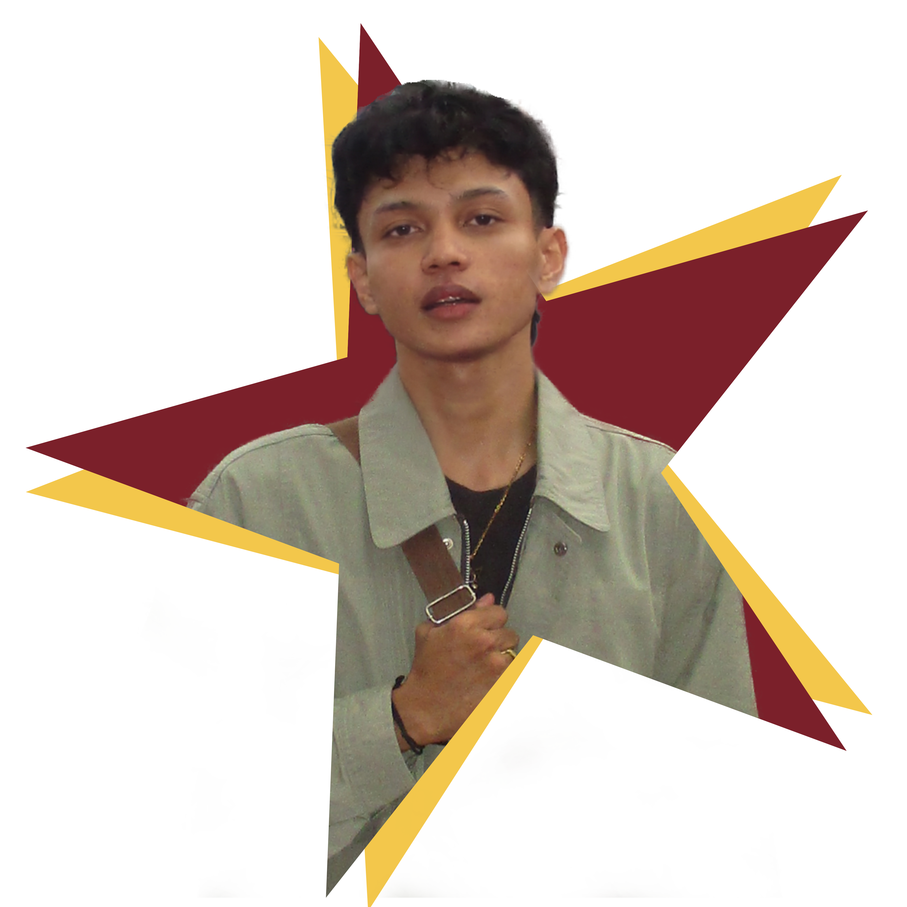

Influencer Summit 2026
2026 · Desainer grafisMerancang kebutuhan visual acara, termasuk logo, proposal, pitch deck, pamflet, poster, undangan, dan materi informasi.
- Logo acara
- Materi event
- Pitch deck
Desainer Grafis · Tasikmalaya
Desainer grafis yang membuat identitas visual, konten media sosial, dan pengalaman digital yang jelas dan mudah diingat.

Lulusan S1 Teknik Informatika (2026) dengan pengalaman sebagai desainer grafis di Gentra Media Utama dan desainer logo serta brand identity lepas. Saya juga memiliki dasar pengembangan web dan WebAR untuk menjembatani desain dengan implementasi digital.
Merancang kebutuhan visual acara, termasuk logo, proposal, pitch deck, pamflet, poster, undangan, dan materi informasi.
Merancang brand identity untuk lima unit bisnis: Gentra.id, Gentra Dara, Gen Creator Hub, Gen Project, dan Gumati Foundation.
Mengembangkan identitas brand menyeluruh yang mencakup logo, kemasan, menu, dan maskot.
Merancang logo untuk Program Studi Agribisnis dan logo acara AGRIVERSE.
Mengembangkan aplikasi WebAR edukasi budaya untuk pengenalan koleksi pusaka Museum Galunggung.
Merancang UI/UX untuk website profil desa dan layanan pengaduan masyarakat Desa Sukaharja.
Detail dan dokumentasi proyek akan ditambahkan.
Detail dan dokumentasi proyek akan ditambahkan.
Detail dan dokumentasi proyek akan ditambahkan.
Detail dan dokumentasi proyek akan ditambahkan.
Detail dan dokumentasi proyek akan ditambahkan.
TERBUKA UNTUK KOLABORASI
Punya ide atau proyek desain? Ceritakan, dan kita mulai obrolannya.